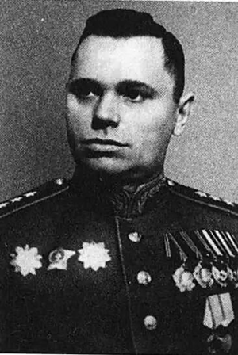

13 воздушная армия
Сформирована в ноябре 1942 г. на базе ВВС Ленинградского фронта. Первоначально в ее состав вошли 275-я истребительная, 276-я бомбардировочная и 277-я штурмовая авиационные дивизии. Поддерживала войска Ленинградского фронта при прорыве блокады Ленинграда, в Ленинградско-Новгородской, Выборгской, Нарвской, Таллиннской и Моонзундской десантной операциях. Войска армии участвовали в освобождении городов: Красное Село (19 января 1944 г.), Слуцк (ныне Павловск) (24 января 1944 г.), Красногвардейск (ныне Гатчина) (26 января 1944 г.) – в ходе Красносельско-Ропшинской операции Ленинградского фронта; Кингисепп Ленинградской обл. (1 февраля 1944 г.) – в ходе Ленинградско-Новгородской операции Ленинградского фронта; Виипури (ныне Выборг) (20 июня 1944 г.) – в ходе Выборгской операции Ленинградского фронта; Нарва (26 июля 1944 г.) – в ходе Нарвской операции Ленинградского фронта; Таллинн (22 сентября 1944 г.), Хаапсалу (24 сентября 1944 г.) – в ходе Таллиннской операции Ленинградского фронта. Всего за войну совершила около 120 тыс. самолето-вылетов. 3а боевые отличия 10 ее соединений и частей преобразованы в гвардейские и удостоены почетных наименований, 20 награждены орденами, тысячи воинов армии награждены орденами и медалями, 151 летчику присвоено звание Героя Советского Союза, а П. А. Покрышеву это звание присвоено дважды. В Действующей армии находилась с 25 ноября 1942 по 9 мая 1945 г. Печатный орган – газета «Боевая тревога». Командующий Рыбальченко Степан Дмитриевич - генерал-лейтенант авиации 20.11.1942 - 30.11.1944
1.Воздушная обстановка в истекшем месяце была благоприятной для частей 13 Воздушной Армии. Численное превосходство нашей авиации над авиацией противника, выучка наших летных кадров позволила решать беспрепятственно все поставленные Военным советом Ленинградского фронта перед 13 Воздушной Армией.
2.Все поставленные задачи перед частями 13 Воздушной Армии Военным Советом Ленфронта выполнены. 3.Нового в тактике и приемах боевой работы авиации противника не отмечено.»
02.10.
Войска Фронта вели наступательные действия по овладению островом ДАГО. Авиация противника противодействия боевой работе нашей ВВС 12.10.141 не оказывала. Всего отмечен 1 самолетопролет противника с целью разведки намерения наших войск. Части 13 Воздушной Армии в течение дня 2.10 вели боевую работу по обеспечению наступательных действий 8 Армии по овладению островами ДАГО. 277 ШАД группами штурмовиков по данным разведки на себя уничтожала живую силу и технику противника на острове ДАТО в р-нах ХЭЛЛАМА, ВОХТЕРПЯ, ХЕЛЕТЕРМА,ПЮХАЛЕПА.
275 ИАД группами истребителей в течение 2.10 прикрывала переправу к острову ДАГО и звеном истребителей вела разведки расположения войск противника на острове Даго.
276 БАД- Одиночными самолетами ПЕ-2 вела разведку войск противника на строве ДАГО.
13 ОРАП парой истребителей производил разведку расположения войск противника на острове ДАГО.
203 ОКРАП одним самолетом ИЛ-2 под прикрытием 2-х истребителей Як-9 283 ИАП производил корректиров ку артоїня нашей артиллерии.
В результате боевых действий уничтожено до роты пехоты, 2 Артбата ареи, 65 повозок с грузом, 13 лова- дей, 1 батарея ЗА, взорван склад боеприпасов, подав лен огонь 3-х артбатарей, одной батареи ЗА. В течение 2.10 нашими истребителями проведен один воздушный бой, в результате которого сбит 10-88, своих потерь нет. Всего на выполнение поставленных задач 2.10 вылетало 57 самолетов, произведено 67 самолетовылетов, налет 55ч.14мин. по задачам:
а/ На разведку войск противника 8 самолетов - a летов.
б/ На штурмовку живой силы и техникия противника 47 самолетовылетов. -
в/ На прикрытие переправы - 10 самолетовылетов.
г/ На прикрытие разведчика 2 самолетовылета. -
Израсходовано боеприпасов: 10 ФАБ-100, 79 ФАБ-50, 25 A0-25, 130 A0-20, 86 РС-82,180 ОКБ-16, 400 ШВАК, 9840 ВЯ, 20350 ШКАС, 2350 БC.
Погода в течение дня: облачность 7-10 баллов, Н-600-100 метров, видимость 4-2 клм.
03.10.
Войска фронта продолжали вести наступательные операции по овладению островом ДАГО. 13 Воздушная Армия в течение 3.10 боевых действий не вела вследствие неблагоприятных метеоусловий облачность 10 баллов дожди при видимости 1-2 клм
Личный состав занимался учебно-боевой подготовкой, осмотром материальной части.
Авиация противника активности не проявляла и над расположением наших войск в течение 3.10 не появлялась. Части 13 ВА встреч с воздушным противником 3.10 не имели.
Потерь и повреждений нет Части Фронта в результате, умело проведенной десантной операции, овладели островом ДАГО.
[2]
 13 Воздушная Армия участвовала в Моонзундской наступательной операции. Удостоенные звания «Герой Советского Союза» за боевую операциюАллик Август Августович
Андрусенко Валентин Кузьмич
Банифатов Иван Сергеевич
Глинский Сергей Николаевич
Гудимов Иван Кириллович
Гургенидзе Александр Ермолаевич
Дерябин Алексей Никитович
Жуков Николай Андреевич
Корчагин Лев Павлович
Кошевой Федор Алексеевич
Лагутенко Иван Никитович
Ларин Иван Яковлевич
Матяшин Николай Николаевич
Обухов Александр Афанасьевич
Оводовский Григорий Яковлевич
Петровский Константин Остапович
Плешаков Алексей Сергеевич
Репсон Альберт Густавович
Степанов Николай Никитович
Тихонов Виктор Иванович
[2]